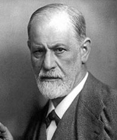

Tell me about your dreams
As a student of psychology, the first question that people often ask me is: “Can you tell me
what’s the meaning of that dream I made last day?”
I get it! Psychology is often associated with Freud, the father of psychoanalysis and the
first to formulate a theory of dream interpretation, but dreams are only a small part
treated in a psychoanalytic setting.

Starting from the beginning, Freud (1900)
explains that sources of dreams include stimuli from the external world, subjective
experiences, organic stimuli within the body, and mental activities during sleep.
For instance, empirical evidence (Zhang,
2016) supported that memory
consolidation, emotion regulation and reception of external stimuli can contribute to dream
content.
Freud suggested that some connection between real life and dreams are not random, but
constrained by one’s unconscious desires. Along these lines, the interpretation of dreams
can help understand the unconscious, which try to emerge in our sleep.
This conception about dreams, as a way for the unconscious to bypass the consciousness and
express inadmissible desires, has dominated for more than half a century.
Bion (1962a, 1992b) did a revolution and took into consideration just the psychic
phenomenon of dreaming
rather that the dream as an unconscious content to be deciphered. He was concerned more with
the way we dream than with the dream’s symbolic content.
He described the dream as an essential function of the human mind: a result of a
transformation from what he called beta element, the very first sensory matrix on which
thought develops, into alpha element, which resemble the visual images with which we are
familiar in dreams.
According to this idea, the alpha function promotes the growth of thoughts; it produces
alpha elements, suitable for use in dream-thinking and waking-unconscious thinking.
In fact, he interprets dreaming as the unconscious processing of emotional experience, which
occurs continuously and simultaneously with conscious thinking: both when we are awake and
asleep. During sleep, the dream takes advantage of the suspension of consciousness, the
dream activity makes possible those emotional experiences that could not be reached in the
waking state. Bion hypothesizes the existence of a dream function that is also active in the
waking state, even though shielded by perceptions and distractions operated in reality.
With Bion, the dream is released from the state of consciousness and no longer needs sleep
to exist.
The patient would take the dream into analysis in the hope of receiving the analyst’s help
in
completing the unconscious intolerable work, but dreams are themeselves the way we have
already
interpreted the facts.
Bionian thought has led several authors to equate the activity of dream thinking with the
mental activity of waking, emphasizing the function of both of developing, maintaining and
re-establishing the psychological organization of the self and the regulation of affects.
We are close to the procedure that A. Ferro has called «transformations in dreams»,
that is when the analyst mentally introduce the predicate "I had a dream" to the patient's
communication, whatever it may be. This linguistic-cognitive ritual, immediately strips the
external reality of its significance, predisposing the analyst to the “dreamiest” attention
possible.
Ferro (2013)
supports the need to reconstruct every communication as if it were a dream, and the need for
patient and analyst to dream together.
The dream allows the analyst to work on the patient's alpha function, but also on his own,
through a sort of training in the multiplicity of perspectives that the dream story offers.
Within the analytic field, the dream remains the main monitoring tool, since it represents
one of the most creative ways that the patient has to communicate his analytic experiences.
With Ferro, there are no external, internal or transfert communications that do not belong
to the setting within the analysis and that cannot be considered narrative derivatives of
the dreamlike thought of waking. Even the more subjective elements such as the patient's
dream belong to the field to signify and signal the movements of the waking dream related to
the movement in which the dream is narrated. The field allows you to describe and collect
emotions, clarifying and focusing them, using the characters of the setting, who lose their
historical-referential status, to assume the characteristic of transformative processes of
the analytic couple.
So, finally, Ferro tells us that dreams should not be hardly interpreted: they are the
clearest and simplest story and should be easy to understand. The process of attributing
meaning to the dream, more than its symbolic decoding, can lead to recognizing oneself in
its functioning and bringing out the need to arrive at a new, more complex, identity
reality.